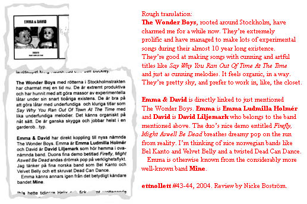

The Wonder Boys
news

Notes:
A few people have mistaken the fake “cut up” alternative song titles
on the back cover, for the real ones. Maybe we just have to do a song called
“Say Why You Ran Out Of Time At The Time” after all?
Also, we all know that we’re approaching the 5 year anniversary of the
“...And It’s A Wonderful, New Start” cassette album release,
but the strange “10 year long existence” line in this review raises
the question of - when did The Wonder Boys start? March 30, 1998 maybe, when,
after some talk about playing together, Christian K played guitar on David’s
“Tell Me What To Do” and laid down the guitar track to what became
the very first CK/DL-song, “Easter Chicken”? But songs by David
recorded before that have been used, from 1997 and earlier - not to mention
“Sax Play”, which was written - and demo'ed - in the latter half
of the 80’s (!).